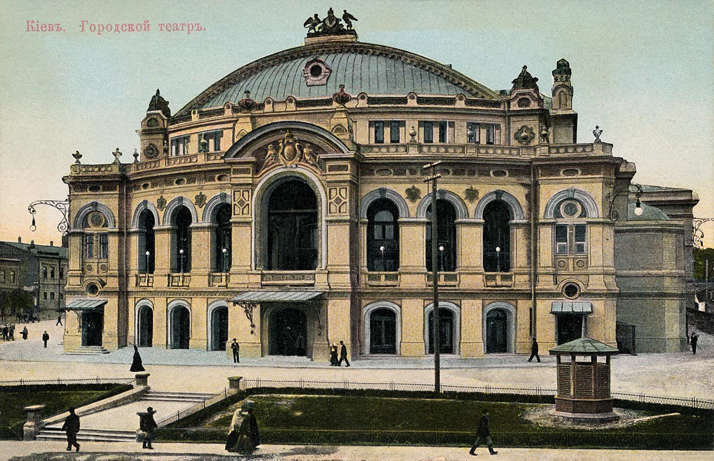
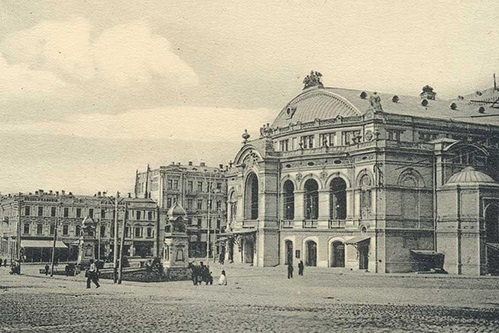

Національна опера України

Історичний нарис
Дореволюційні роки
Постійна оперна трупа була організована у Києві влітку 1867 року. Поштовхом до створення постійно чинного театру стали успішні гастролі італійських оперних труп у 1865—1866 роках у Києві. Трупа працювала у приміщенні Міського театру, збудованого 1856 року за проєктом архітектора Івана Штрома. Київська опера стала поряд з театрами Москви і Петербурга однією з найкращих у Російській імперії. 27 жовтня (8 листопада) 1867 року відбувся дебют на сцені нового театру з постановкою «Аскольдова могила» Олексія Верстовського, яка розповідала про легендарне минуле Києва. Подальші творчі здобутки київської оперної трупи пов'язані, перш за все, з діяльністю генія української музики, композитора Миколи Лисенка. 1874 року вперше прозвучала українською мовою його опера «Різдвяна ніч» (за режисурою Михайла Старицького).У перші роки існування театру репертуар поповнювався творами переважно російських композиторів: Михайла Глинки («Життя за царя», «Руслан і Людмила»), Олександра Даргомижського («Русалка»), Антона Рубінштейна («Маккавей») та ін. Це було неодмінною умовою існування музичного театру. Проте вдавалося ставити і європейську класику, на досить високому рівні показуючи в перекладі російською мовою опери «Севільський цирульник» Джоаккіно Россіні, «Весілля Фігаро» Вольфганга Амадея Моцарта, «Чарівний стрілець» Карла Вебера, «Лючія ді Ламмермур» Гаетано Доніцетті, а також один за одним твори Джузеппе Верді, який став улюбленим композитором киян. За життя Петра Чайковського в Києві були поставлені його опери «Опричник» (1874), «Євгеній Онєгін» (1884), «Мазепа» (1886) та «Пікова дама» (1890). Безпосередньо за участю авторів відбулися київські прем'єри опер «Алеко» Сергія Рахманінова (1893), «Снігуронька» Миколи Римського-Корсакова (1895). Перший сезон був відкритий оперою Олексія Верстовського «Аскольдова могила». Незабаром у театрі були поставлені опери «Івана Сусанін» та «Руслан і Людмила» Михайла Глінки, на прем'єри опер «Опричник» (1874), «Євгеній Онєгін» (1889) та «Пікова Дама» (1890) приїздив Петро Чайковський, 1893 року до театру приїздив Сергій Рахманінов на прем'єру опери «Алеко», а 1895 року — Микола Римський-Корсаков на прем'єру «Снігуроньки». У лютому 1896 році після ранкової вистави «Євгенія Онєгіна» сталася пожежа, що повністю знищила будівлю Міського театру, після чого був оголошений конкурс на проєкт нової будівлі. Цей конкурс виграв проєкт російського архітектора Віктора Шретера. Спорудження нової будівлі на місці старого театру розпочалося у 1898 році. Зал оперного театру включав партер, амфітеатр, бельетаж та чотири яруси, що вміщують близько 1650 глядачів (у партері 384 місця), загальна кубатура театру — майже 100 000 м³, площа приміщень — 40210 м². Над головним входом театру був встановлений офіційний герб Києва із зображенням архістратига Михаїла — покровителя міста, проте за наполяганням Київського митрополита Фіогноста, який вважав театр гріховним закладом, герб замінили алегоричною композицією: геральдичні грифони тримають у лапах ліру як символ музичного мистецтва. Фасад будівлі прикрашали бюсти композиторів Михайла Глинки та Олександра Сєрова, які подарували Києву артисти петербурзького Маріїнського театру. Урочисте відкриття та освячення нової будівлі відбулося 15 (28) вересня 1901 року. Окрім опер російських композиторів, театрі також були поставлені опери Джакомо Пуччіні, Ріхарда Вагнера, Жуля Массне, а також опери Миколи Лисенка «Травнева ніч» (1903) та «Ноктюрн» (1914). З 1901 року в цей період солістами були: співачки Любов Андрєєва-Дельмас, Елеонора Боброва-Пфейфер, Євгенія Бронська, Клара Брун, Катерина Воронець-Монтвід, Марія Донець-Тессейр, Софія Друзякіна, Марія Коваленко, Катерина Ковелькова, Ольга Монська, Олена Петляш-Барілотті, Зінаїда Рибчинська, Марина Скибицька, Розалія Файнберг-Горська; співаки Степан Белина-Скупевський, Антон Боначич, Олексій Борисенко, Гуальтьєр Боссе, Михайло Бочаров, Олександр Брагін, Абрам Брайнін, Михайло Донець, Оскар Каміонський, Микола Каржевін, Олександр Каченовський, Володимир Лосський, Михайло Микиша, Марія Гущина, Федір Орешкевич, Платон Цесевич, Ольга Грозовська, Іван Гриценко та ін. З 1913 року в театрі працював відомий диригент Михайло Багриновський.
Українська Держава
У роки революції приміщення оперного театру використовувався не тільки для мистецтва, але й для проведення з'їздів. Зокрема, 1917 року в приміщенні оперного театру проходив ІІ Всеукраїнський військовий з'їзд, на якому було проголошено Перший Універсал Української Центральної Ради. У часи Української Держави київська опера називалася як Український театр драми та опери. У серпні 1918 року були перекладені українською мовою опери: «Галька», «Фауст», «Травіата», «Черевички», «Казки Гофмана», «Богема», «Продана наречена», «Русалка», «Сільська честь», «Жидівка», «Мадам Батерфляй». Вітчизняна преса писала, що українська державна опера має всі підстави і потенціал стати одним із найкращих театрів свого часу, разом з тим застерігаючи, що «українська державна опера не повинна повторити історію петроградських державних театрів, котрі давали чужу людності й громадянству культуру…» Ними наголошувалося, що слід «організувати справу опери художньо сильної, національної і культурної».
Радянські роки
З приходом радянської влади у 1919 році театр було націоналізовано і названо «Державним оперним театром ім. К. Лібкнехта», режисерами призначено Олександра Улуханова і Якова Гречнєва. У 1926 році — Київська державна академічна українська опера, а в 1934 році, з поверненням Києву статусу столиці — Академічний театр опери і балету УРСР. З відомих художників цього часу в опері працював Семен Евенбах. 1936 року театр був нагороджений орденом Леніна, а в 1939 році театрові було присвоєне ім'я Тараса Шевченка. Декрет раднаркому 1926 року передбачав виконання усіх опер українською мовою, що мало велике значення для утвердження повновартісності української культури й української мови. Ця традиція протрималася до початку 1990-х років. У 1930-ті роки обговорювався проєкт соціалістичної перебудови приміщення київського оперного, якому хотіли надати архітектурних особливостей нового «пролетарського стилю». Проте перебудова торкнулася лише зняття бюстів російських композиторів та зведення прибудови до тильної сторони будівлі двоповерхового приміщення репетиційних залів. В ці роки репертуар театру збагатився операми «Золотий обруч» та «Щорс» Бориса Лятошинського, «Борис Годунов» Модеста Мусоргського та іншими. В роки німецько-радянської війни театр було евакуйовано в Уфу, потім в Іркутськ, де театр працював до 1944 року. В той же час частина трупи, а також значна частина декорацій залишалися у Києві, і театр продовжував працювати в умовах німецької окупації. Очільником театру був призначений німецький ставленик Брюкнер, що найменував театр «Великою оперою», заборонив виконання російської музики, проте окрім німецьких опер (мовою оригіналу), ставив також італійські опери в українському перекладі Дмитра Ревуцького, і навіть деякі твори українських авторів дорадянського періоду. Напередодні відвоювання Києва, 8 травня 1943 року під час вистави «Лоенргіну» у приміщення театру влучила бомба, що спричинила загибель 4-х німецьких офіцерів. У повоєнні роки репертуар театру поповнювався творами радянських композиторів, значна частина яких були присвячені подіям становлення радянської влади. У ці роки в театрі працювали видатні артисти — диригенти Арій Пазовський, Натан Рахлін, Веніамін Тольба, Костянтин Сімеонов, Степан Турчак, вокалісти Борис Гмиря, Михайло Гришко, Арнольд Азрікан, Зоя Гайдай, Лілія Лобанова, Марія Литвиненко-Вольгемут, Оксана Петрусенко, Лариса Руденко,Єлизавета Чавдар, виступав у театрі і Федір Шаляпін. Починаючи з кінця 1950-х років, за свідченням Івана Гамкала, театр переживав поступове «падіння творчої дисципліни і художнього рівня спектаклів», причиною чому була некомпетентність у питаннях культури його керівництва. Так, наприкінці 1950-х років київський театр змушені були покинути Борис Гмиря та Веніамін Тольба, а на початку 1970-х років — Степан Турчак і Костянтин Симеонов. Незважаючи на це театр мав окремі успішні постановки, зокрема серед визначних здобутків слід виділити постановку «Катерини Ізмайлової» Дмитра Шостаковича, що була нагороджена Державною премією ім. Т. Шевченка (1975). У 1983–1988 роках було здійснено капітальну реконструкцію театрального приміщення (архітектор Борис Жежерін). Реставратори внесли значні зміни у закулісну частину театрального приміщення, що дозволило збільшити кількість репетиційних залів, гримувальних кімнат, було обладнано спеціальний хоровий клас. Також було збільшено параметри сцени до 20 м вглиб і 27 м у висоту. Загальна площа сцени тепер становить 824 м². Також під час реставрації замість старовинного органу встановили новий, збудований на замовлення театру чеською фірмою «Рігер-Клос». Було переобладнано й оркестрову яму, в якій зараз одночасно може розміститись 100 музикантів. Загалом після реставрації площа театральних приміщень збільшилася на 20000 м². Стало вдвічі більше гримувальних кімнат, з'явилося кілька нових репетиційних залів.
Роки Незалежності
Починаючи з 1991—1999 роках генеральним директором Національної опери є Анатолій Мокренко. В цей час театр поступово починає відмовлятися від україномовних перекладів, що сам А. Мокренко пояснював економічними труднощами і необхідністю гастрольної діяльності заради виживання артистів. З 1992 по 2000 рік балетну трупу Національної опери України очолював Анатолій Шекера, з ім'ям якого пов'язані досягнення українського балету останніх трьох десятиліть ХХ століття. Окрім класичних вистав — «Лебедине озеро» і «Лускунчик» Петра Чайковського, «Раймонда» Олександра Глазунова, «Коппелія» Лео Деліба — він здійснив постановки багатьох сучасних творів, зокрема, «Спартака» Арама Хачатуряна, «Ольги» Євгена Станковича, «Легенди про любов» Аріфа Мелікова, привнісши на балетну сцену поліфонізм танцю, симфонічну розгорнутість хореографічної партитури. Його постановка балету «Ромео і Джульєтта», здійснена 1971 року, вже понад 40 років не сходить зі сцени. Вистава була показана в багатьох країнах і відзначена медаллю ЮНЕСКО як найкраща інтерпретація прокоф'євського твору. З 1999 незмінним генеральним директором театру є Петро Чуприна (з 2002 по 2011 рр. та з 2018 р.– генеральний директор-художній керівник театру). У 2011—2018 роках посаду художнього керівника обіймав композитор Мирослав Скорик.Чимало артистів київської опери успішно ведуть артистичну діяльність за кордоном. Зокрема в найкращих театрах Європи і світу співають Анатолій Кочерга, Людмила Монастирська, Вікторія Лук'янець, Володимир Гришко, Михайло Дідик, Дмитро Попов, Ольга Микитенко, Оксана Дика, Євген Орлов, Ірина Дворовенко впродовж багатьох років була солісткою Американського театру балету (АBT), Іван Путров — балетної трупи театру «Ковент Гарден». Олексій Ратманський очолював Датську Королівську хореографічну трупу, згодом — балетну трупу Большого театру Росії, а з 2009 року — хореограф Американського театру балету. Театр гастролював в Німеччині, Франції, Швейцарії, Канаді, США, Мексиці, Данії, Іспанії, Італії, Японії, Австралії, Греції, Бразилії, Естонії, Польщі, Китаї, Угорщині, Австрії, Голландії, Бельгії, Португалії, Туреччині, Омані, ін. У 2017 році на державному рівні в Україні відзначався ювілей — 150 років з часу заснування Національного академічного театру опери та балету імені Тараса Шевченка в місті Києві 1867). До кола сучасних українських композиторів, чиї твори включались до репертуару театру, входять Мирослав Скорик (опера «Мойсей», балет «Каприси»), Герой України Євген Станкович (балети «Ніч перед Різдвом», «Володар Борисфену»), народний артист України М. Чембержі (балет «Даніела». До кола українських авторів радянської епохи, твори яких представлені в репертуарі театру, входять Костянтин Данькевич (балет «Лілея»), Михайло Скорульський (балет «Лісова пісня») та Георгій Майборода (опера «Ярослав Мудрий»). Станом на 2019 рік в репертуарі НОУ нараховується 26 опер, з яких лише 2 — українських авторів, сучасні опери в репертуарі відсутні та 41 балет, в т. 4 — українських авторів (з них 2 сучасні — «Вечори на хуторі біля Диканьки» Є. Станковича та «За двома зайцями» Ю. Шевченка)